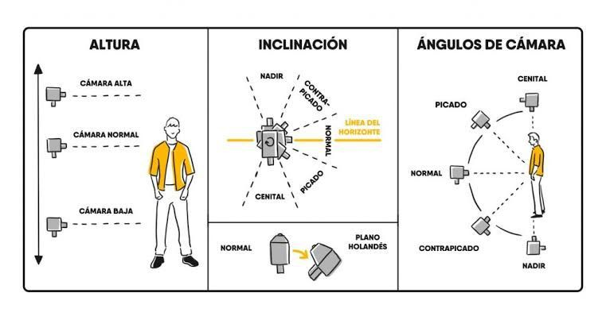
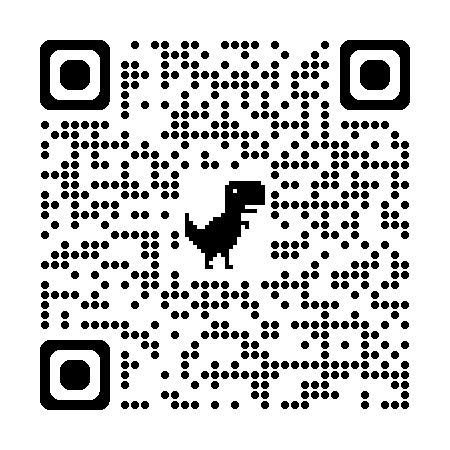
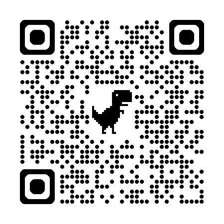
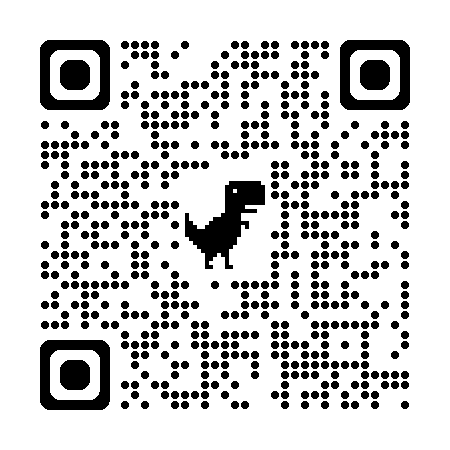

Planos ángulos y movimineto de la cámara

Dominar el lenguaje visual es clave para transmitir emociones y mensajes con impacto🔎. Los planos (como el general o el primer plano) definen qué vemos y en qué contexto; los ángulos(picado, contrapicado) influyen en la percepción de poder o vulnerabilidad de los personajes; y los movimientos (paneos, travellings) guían la atención del espectador de forma dinámica. Juntos, estas herramientas no solo enriquecen la narrativa audiovisual, sino que transforman una simple escena en una experiencia immersiva y memorable. Aprender a utilizarlos eleva cualquier proyecto, desde cortometrajes hasta contenidos educativos o promocionales📹.
Objetivos de aprendizaje
- 🧠 Al finalizar la sesión, el estudiante identificará y clasificará correctamente al menos 8 de los 10 planos cinematográficos principales (general, entero, americano, medio, primer plano, etc.) presentados en un ejercicio visual, utilizando una rúbrica proporcionada.
- 🔍 Tras analizar 3 escenas de películas, el estudiante explicará por escrito el efecto emocional de 3 ángulos de cámara (picado, contrapicado, neutro) con un 100% de precisión en la terminología técnica, en un informe de 500 palabras.
- 📝 En 2 horas, el estudiante grabará una escena de 30 segundos aplicando 3 movimientos de cámara (paneo, travelling, zoom) de manera técnicamente correcta y justificará su elección narrativa en un breve informe.
- 💻 Al concluir el módulo, el estudiante diseñará un guion gráfico (storyboard) con 6 viñetas que integren al menos 3 planos, 2 ángulos y 2 movimientos de cámara, coherentes con una narrativa propuesta, y recibirá retroalimentación positiva en al menos el 80% de los criterios de evaluación

Actividades prácticas
🎬 Ejercicio 1: Identificación de planos
Situación: Observa las siguientes descripciones y clasifica cada una según el tipo de plano cinematográfico correspondiente:
1. Una imagen donde solo se ven los ojos y la frente de un personaje.
2. Una toma que muestra a un personaje de cabeza a pies con fondo visible.
3. Una foto donde se ve a un personaje desde la cintura hacia arriba.
Instrucciones: Escribe los tres tipos de planos separados por comas (ejemplo: plano detalle, plano general, plano medio)
📐 Ejercicio 2: Ángulos de cámara
Situación: Eres director de fotografía y necesitas elegir el ángulo correcto para transmitir diferentes emociones.
Escenario: Quieres que el personaje principal se vea poderoso y dominante en la escena final.
Opciones:
- A) Ángulo picado (cámara arriba, mirando hacia abajo)
- B) Ángulo contrapicado (cámara abajo, mirando hacia arriba)
- C) Ángulo neutro (cámara a la altura de los ojos)
Instrucciones: Escribe la letra de la opción correcta
🎥 Ejercicio 3: Movimientos de cámara
Situación: Estás filmando una escena donde un personaje camina por un largo pasillo. Quieres seguir su movimiento de manera fluida.
¿Qué movimiento de cámara es el más apropiado?
- Paneo: Movimiento horizontal de la cámara
- Tilt: Movimiento vertical de la cámara
- Travelling: La cámara se desplaza físicamente siguiendo al sujeto
- Zoom: Acercamiento o alejamiento óptico
Instrucciones: Escribe el nombre del movimiento más apropiado
Evaluación
Comprueba lo que has aprendido. Selecciona la respuesta correcta para cada pregunta.
Recursos para profundizar
Para ampliar tu conocimiento sobre los sistemas de ecuaciones lineales, te recomendamos explorar los siguientes enlaces y documentos:
-
1. Khan Academy - Arte y Narrativa Visual::
Ir al recurso
-
Encuadres, puntos de vista, movimientos de cámara y maquinaria
Ir al recurso
-
¿Cuáles son los planos y ángulos de cámara?
Ir al recurso
Bibliografía
*Módulos 2-5: Composición y angulaciones.*
https://unesdoc.unesco.org/ark:/48223/pf0000143685